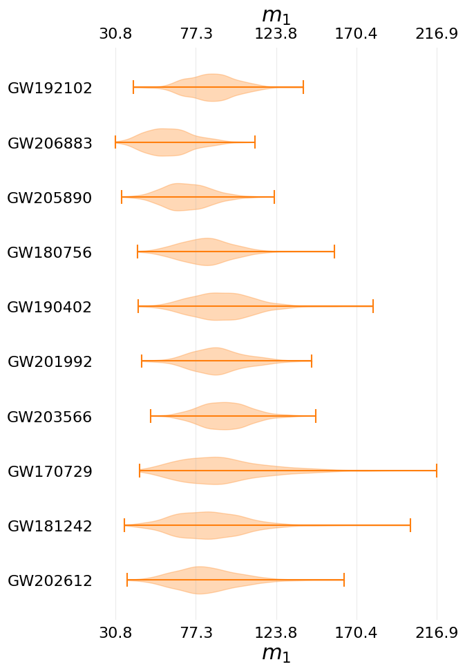
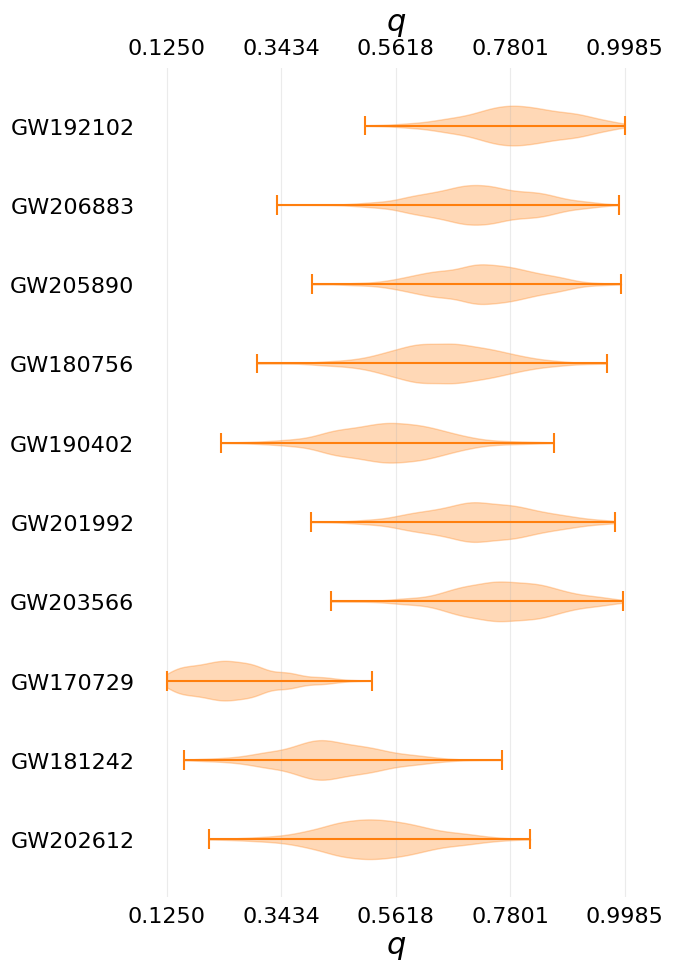
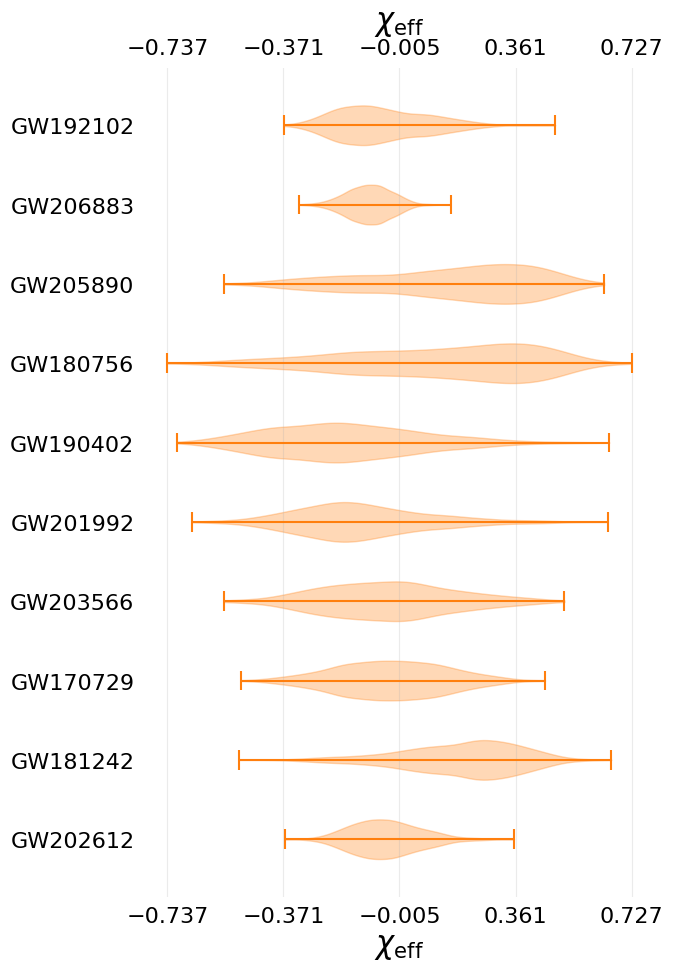

Catalog plots
Contents
Catalog plots#
Here we have some catalog plots showing the ensemble results of the catalog (working on making these plotly-plots).
from nrsur_catalog import Catalog
catalog = Catalog.load()
|NURSUR CATALOG|03/03 16:32:55|INFO| Setting cache dir to: /Users/avaj0001/Documents/projects/nrsurrogate_catalog/tests/test_events_dir
|NURSUR CATALOG|03/03 16:32:56|INFO| Setting cache dir to: /Users/avaj0001/Documents/projects/nrsurrogate_catalog/tests/test_events_dir
|NURSUR CATALOG|03/03 16:32:57|INFO| Setting cache dir to: /Users/avaj0001/Documents/projects/nrsurrogate_catalog/tests/test_events_dir
|NURSUR CATALOG|03/03 16:32:57|INFO| Setting cache dir to: /Users/avaj0001/Documents/projects/nrsurrogate_catalog/tests/test_events_dir
|NURSUR CATALOG|03/03 16:32:57|INFO| Setting cache dir to: /Users/avaj0001/Documents/projects/nrsurrogate_catalog/tests/test_events_dir
|NURSUR CATALOG|03/03 16:32:57|INFO| Setting cache dir to: /Users/avaj0001/Documents/projects/nrsurrogate_catalog/tests/test_events_dir
|NURSUR CATALOG|03/03 16:32:57|INFO| Setting cache dir to: /Users/avaj0001/Documents/projects/nrsurrogate_catalog/tests/test_events_dir
|NURSUR CATALOG|03/03 16:32:57|INFO| Setting cache dir to: /Users/avaj0001/Documents/projects/nrsurrogate_catalog/tests/test_events_dir
|NURSUR CATALOG|03/03 16:32:57|INFO| Setting cache dir to: /Users/avaj0001/Documents/projects/nrsurrogate_catalog/tests/test_events_dir
|NURSUR CATALOG|03/03 16:32:57|INFO| Setting cache dir to: /Users/avaj0001/Documents/projects/nrsurrogate_catalog/tests/test_events_dir
|NURSUR CATALOG|03/03 16:32:57|INFO| Setting cache dir to: /Users/avaj0001/Documents/projects/nrsurrogate_catalog/tests/test_events_dir
Mass 1#
catalog.violin_plot('mass_1')
findfont: Font family ["'sans-serif'"] not found. Falling back to DejaVu Sans.
findfont: Font family ["'sans-serif'"] not found. Falling back to DejaVu Sans.
findfont: Font family ['cursive'] not found. Falling back to DejaVu Sans.
findfont: Generic family 'cursive' not found because none of the following families were found: 'Liberation Sans'
findfont: Font family ['sans'] not found. Falling back to DejaVu Sans.
findfont: Generic family 'sans' not found because none of the following families were found: 'Liberation Sans'
findfont: Font family ['sans'] not found. Falling back to DejaVu Sans.
findfont: Generic family 'sans' not found because none of the following families were found: 'Liberation Sans'
findfont: Font family ['sans'] not found. Falling back to DejaVu Sans.
findfont: Generic family 'sans' not found because none of the following families were found: 'Liberation Sans'


Mass Ratio#
catalog.violin_plot('mass_ratio')


Chi Eff#
catalog.violin_plot('chi_eff')

